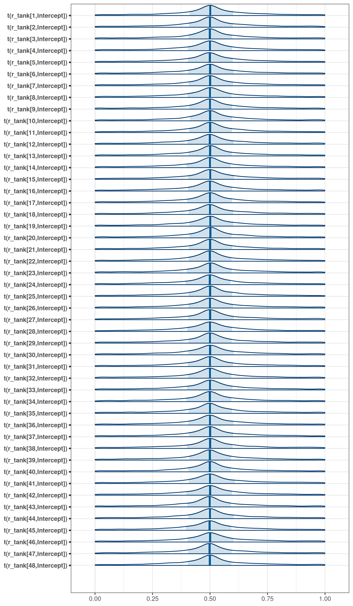
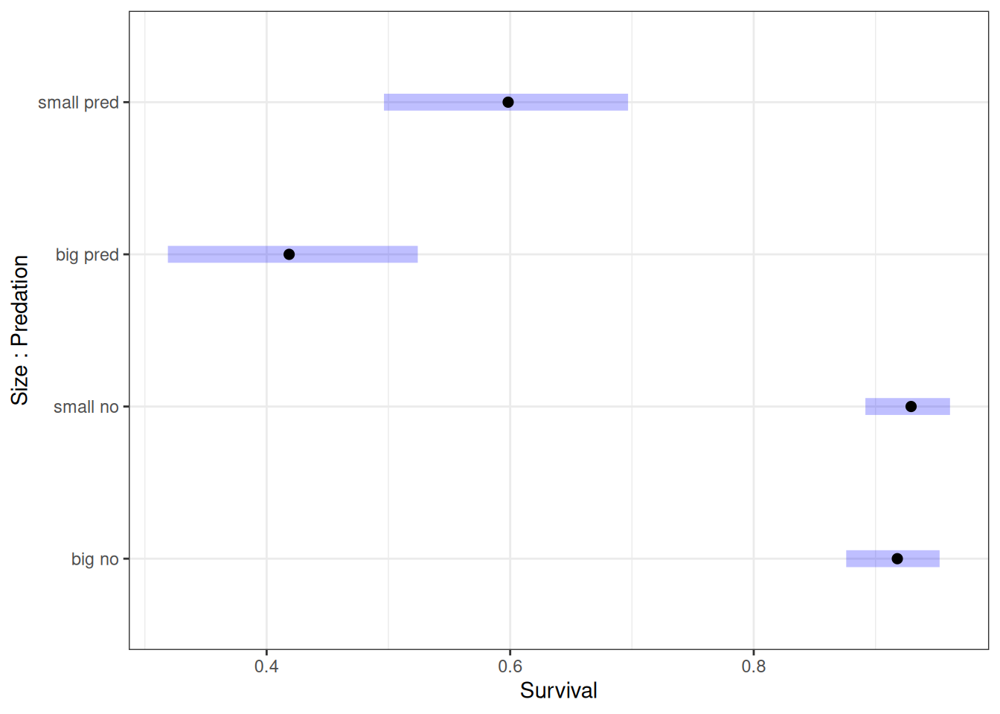

targets::tar_source('R')Homework 06
Setup
Question 1
Conduct a prior predictive simulation for the Reedfrog model. By this I mean to simulate the prior distribution of tank survival probabilities. Start by using this prior:
\[\alpha_{j} \sim Normal(\bar{\alpha}, \sigma)\] \[\bar{\alpha} \sim Normal(0, 1)\] \[\sigma \sim Exponential(1)\]
Be sure to transform the alpha j values to the probability scale for plotting and summary. How does increasing the width of the prior on sigma change the prior distribution of alpha j? You might try Exponential(10) and Exponential(0.1) for example.
Prior predictive simulation
# Load data
tar_load(reedfrogs)tar_load(h06_q01_exp_1_brms_sample_prior)
h06_q01_exp_1_brms_sample_prior$prior prior class coef group resp dpar nlpar lb ub source
normal(0, 1) Intercept user
exponential(1) sd 0 user
exponential(1) sd tank 0 (vectorized)
exponential(1) sd Intercept tank 0 (vectorized)mcmc_areas(
h06_q01_exp_1_brms_sample_prior,
regex_pars = 'r_tank',
transformations = inv_logit
)
tar_load(h06_q01_exp_0pt1_brms_sample_prior)
h06_q01_exp_0pt1_brms_sample_prior$prior prior class coef group resp dpar nlpar lb ub source
normal(0, 1) Intercept user
exponential(0.1) sd 0 user
exponential(0.1) sd tank 0 (vectorized)
exponential(0.1) sd Intercept tank 0 (vectorized)mcmc_areas(
h06_q01_exp_0pt1_brms_sample_prior,
regex_pars = 'r_tank',
transformations = inv_logit
)tar_load(h06_q01_exp_10_brms_sample_prior)
h06_q01_exp_10_brms_sample_prior$prior prior class coef group resp dpar nlpar lb ub source
normal(0, 1) Intercept user
exponential(10) sd 0 user
exponential(10) sd tank 0 (vectorized)
exponential(10) sd Intercept tank 0 (vectorized)mcmc_areas(
h06_q01_exp_10_brms_sample_prior,
regex_pars = 'r_tank',
transformations = inv_logit
)Question 2
Revisit the Reedfrog survival data, data(reedfrogs). Start with the varying effects model from the book and lecture. Then modify it to estimate the causal effects of the treatment variables pred and size, including how size might modify the effect of predation. An easy approach is to estimate an effect for each combination of pred and size. Justify your model with a DAG of this experiment
Estimand
What is the causal effect of predation and size on survival?
Scientific model
coords <- data.frame(
name = c('D', 'G', 'P', 'T', 'S'),
x = c(1, 2, 3, 1, 2),
y = c(0, 0, 0, 1, 1)
)dag <- dagify(
S ~ D + G + P + T,
coords = coords,
outcome = 'S',
exposure = c('G', 'P')
)
ggdag(dag, seed = 2, layout = 'auto') + theme_dag()- 48 tanks (T) of reedfrogs
- treatments: density (D), size (G), predation (P)
- outcome: survival (S)
Adjustment set
ggdag_adjustment_set(dag, effect = 'direct') + theme_dag()Analyze the data
# Load model
tar_load(h06_q02_brms_sample)
h06_q02_brms_sample Family: binomial
Links: mu = logit
Formula: surv | trials(density) ~ 1 + pred * size + (1 | tank)
Data: h06_q02_brms_data (Number of observations: 48)
Draws: 4 chains, each with iter = 2000; warmup = 1000; thin = 1;
total post-warmup draws = 4000
Multilevel Hyperparameters:
~tank (Number of levels: 48)
Estimate Est.Error l-95% CI u-95% CI Rhat Bulk_ESS Tail_ESS
sd(Intercept) 0.60 0.12 0.39 0.85 1.00 2119 2662
Regression Coefficients:
Estimate Est.Error l-95% CI u-95% CI Rhat Bulk_ESS Tail_ESS
Intercept 2.43 0.26 1.92 2.95 1.00 2665 2768
predpred -2.75 0.32 -3.37 -2.11 1.00 2044 2637
sizesmall 0.15 0.35 -0.53 0.85 1.00 2555 2874
predpred:sizesmall 0.57 0.43 -0.31 1.42 1.00 1893 1980
Draws were sampled using sample(hmc). For each parameter, Bulk_ESS
and Tail_ESS are effective sample size measures, and Rhat is the potential
scale reduction factor on split chains (at convergence, Rhat = 1).# Estimated marginal effects
marg_eff <- emmeans(h06_q02_brms_sample, ~ size*pred, regrid = 'response')
marg_eff size pred prob lower.HPD upper.HPD
big no 0.918 0.878 0.953
small no 0.929 0.890 0.960
big pred 0.419 0.320 0.524
small pred 0.598 0.491 0.695
Point estimate displayed: median
HPD interval probability: 0.95 plot(marg_eff) + labs(x = 'Survival', y = 'Size : Predation')
Question 3
3-OPTIONAL CHALLENGE. Return to the Trolley data, data(Trolley), from Chapter 12. Define and fit a varying intercepts model for these data. By this I mean to add an intercept parameter for the individual participants to the linear model. Cluster the varying intercepts on individual participants, as indicated by the unique values in the id variable. Include action, intention, and contact as treatment effects of interest. Compare the varying intercepts model and a model that ignores individuals. What is the impact of individual variation in these data?
Estimand
What is the causal effect of action, intention and contact on survey responses, considering the variation of individuals?
Scientific model
coords <- data.frame(
name = c('X', 'R', 'S', 'E', 'Y', 'G', 'P'),
x = c(1, 2, 3, 1, 2, 3, 2),
y = c(0, 0, 0, -2, -1, -2, -3)
)
dag <- dagify(
R ~ X + S + E + Y + G,
E ~ Y + G,
coords = coords
)
ggdag(dag, seed = 2, layout = 'auto') + theme_dag()
- R: response to the trolley story
- X: action, intention, contact
- S: story
- E: education
- Y: age
- G: gender
Analyze the data
tar_load(trolley)
tar_load(h06_q03_no_ind_var_brms_sample)
tar_load(h06_q03_ind_var_brms_sample)
h06_q03_no_ind_var_brms_sample Family: cumulative
Links: mu = logit; disc = identity
Formula: response ~ action + intention + contact
Data: h06_q03_no_ind_var_brms_data (Number of observations: 9930)
Draws: 4 chains, each with iter = 2000; warmup = 1000; thin = 1;
total post-warmup draws = 4000
Regression Coefficients:
Estimate Est.Error l-95% CI u-95% CI Rhat Bulk_ESS Tail_ESS
Intercept[1] -2.83 0.05 -2.93 -2.74 1.00 2446 2329
Intercept[2] -2.15 0.04 -2.24 -2.07 1.00 2662 2471
Intercept[3] -1.57 0.04 -1.65 -1.49 1.00 2945 2769
Intercept[4] -0.55 0.04 -0.62 -0.48 1.00 3405 3015
Intercept[5] 0.12 0.04 0.05 0.19 1.00 3663 2834
Intercept[6] 1.02 0.04 0.95 1.10 1.00 3872 3294
action -0.71 0.04 -0.79 -0.62 1.00 3533 2874
intention -0.72 0.04 -0.79 -0.65 1.00 4633 2867
contact -0.96 0.05 -1.06 -0.85 1.00 3912 2746
Further Distributional Parameters:
Estimate Est.Error l-95% CI u-95% CI Rhat Bulk_ESS Tail_ESS
disc 1.00 0.00 1.00 1.00 NA NA NA
Draws were sampled using sample(hmc). For each parameter, Bulk_ESS
and Tail_ESS are effective sample size measures, and Rhat is the potential
scale reduction factor on split chains (at convergence, Rhat = 1).h06_q03_ind_var_brms_sample Family: cumulative
Links: mu = logit; disc = identity
Formula: response ~ action + intention + contact + (1 | id)
Data: h06_q03_ind_var_brms_data (Number of observations: 9930)
Draws: 4 chains, each with iter = 2000; warmup = 1000; thin = 1;
total post-warmup draws = 4000
Multilevel Hyperparameters:
~id (Number of levels: 331)
Estimate Est.Error l-95% CI u-95% CI Rhat Bulk_ESS Tail_ESS
sd(Intercept) 1.88 0.08 1.73 2.05 1.01 604 1267
Regression Coefficients:
Estimate Est.Error l-95% CI u-95% CI Rhat Bulk_ESS Tail_ESS
Intercept[1] -3.97 0.11 -4.19 -3.74 1.01 304 888
Intercept[2] -3.05 0.11 -3.27 -2.83 1.01 282 817
Intercept[3] -2.27 0.11 -2.47 -2.05 1.01 276 703
Intercept[4] -0.80 0.11 -1.01 -0.59 1.01 270 688
Intercept[5] 0.24 0.11 0.04 0.45 1.01 268 741
Intercept[6] 1.64 0.11 1.43 1.86 1.01 291 846
action -0.95 0.04 -1.04 -0.87 1.00 6504 3449
intention -0.95 0.04 -1.03 -0.88 1.00 8442 3062
contact -1.27 0.05 -1.38 -1.17 1.00 6207 3181
Further Distributional Parameters:
Estimate Est.Error l-95% CI u-95% CI Rhat Bulk_ESS Tail_ESS
disc 1.00 0.00 1.00 1.00 NA NA NA
Draws were sampled using sample(hmc). For each parameter, Bulk_ESS
and Tail_ESS are effective sample size measures, and Rhat is the potential
scale reduction factor on split chains (at convergence, Rhat = 1).tidy_selected_vars <- function(m, vars) {
draws <- tidy_draws(m) |>
gather_variables()
setDT(draws)
draws[.variable %in% vars]
}
sel_vars <- c('b_action', 'b_intention', 'b_contact')
no_ind_var <- tidy_selected_vars(h06_q03_no_ind_var_brms_sample, sel_vars)
no_ind_var[, type := 'No individual variation']
ind_var <- tidy_selected_vars(h06_q03_ind_var_brms_sample, sel_vars)
ind_var[, type := 'Varying intercepts for each individual']
ggplot(rbindlist(list(no_ind_var, ind_var))) +
stat_halfeye(position = 'dodge',
aes(inv_logit(.value),
type,
fill = type),
alpha = 0.2) +
guides(fill = 'none') +
labs(x = 'inv_logit(parameter estimate)', y = '') +
xlim(0, 1) +
facet_wrap(~.variable, ncol = 1)
Parameter estimates for intention, action and contact for the model that includes varying intercepts for each individual are consistently lower than the model that ignores individual variation.